Rich's digital garden
Issue:014 A post-coal landscape
Hello Roadside Picnic subscribers.
Issue: Yep. I started including issue numbers in the title. I should have done it earlier, but I am new to this and still learning. The reasoning is that referring to previous issues without a numeric system is too inefficient, consuming valuable text space and interrupting the coherent flow of things. It's just messy.
In today's issue, I walk a post-industrial edgeland where leisure, lost industry and industrial waste merge into an overlooked multi-layered landscape.
My patch of edgelands: the snowdrops that lingered through the fools spring have faded, replaced by blossom, young nettles and brambles with new pale green off-shoots. It snowed after I took these warm looking spring photos.
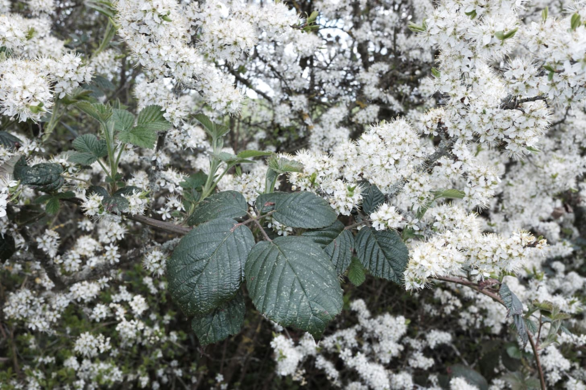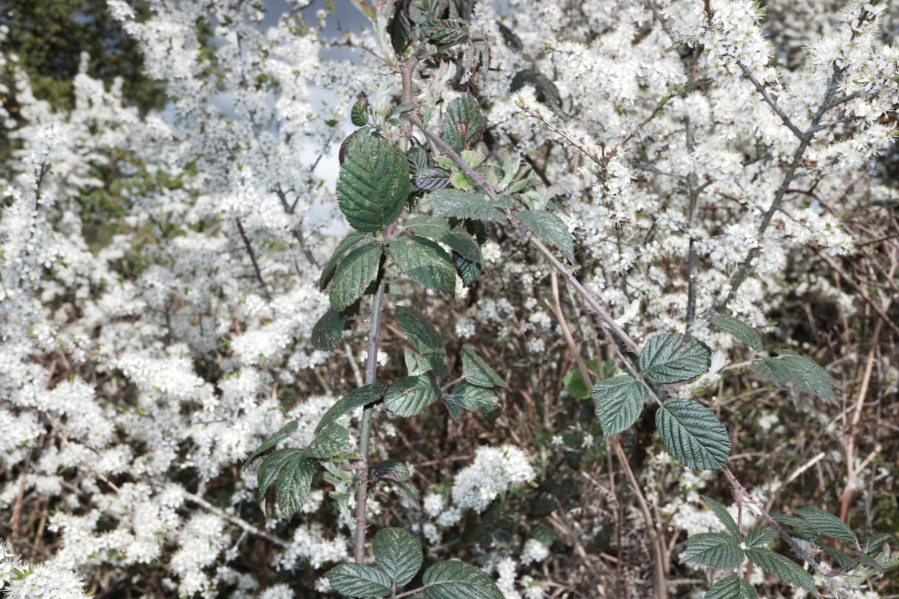### Dipping into a post-industrial landscape
{kind=link}
{kind=link}
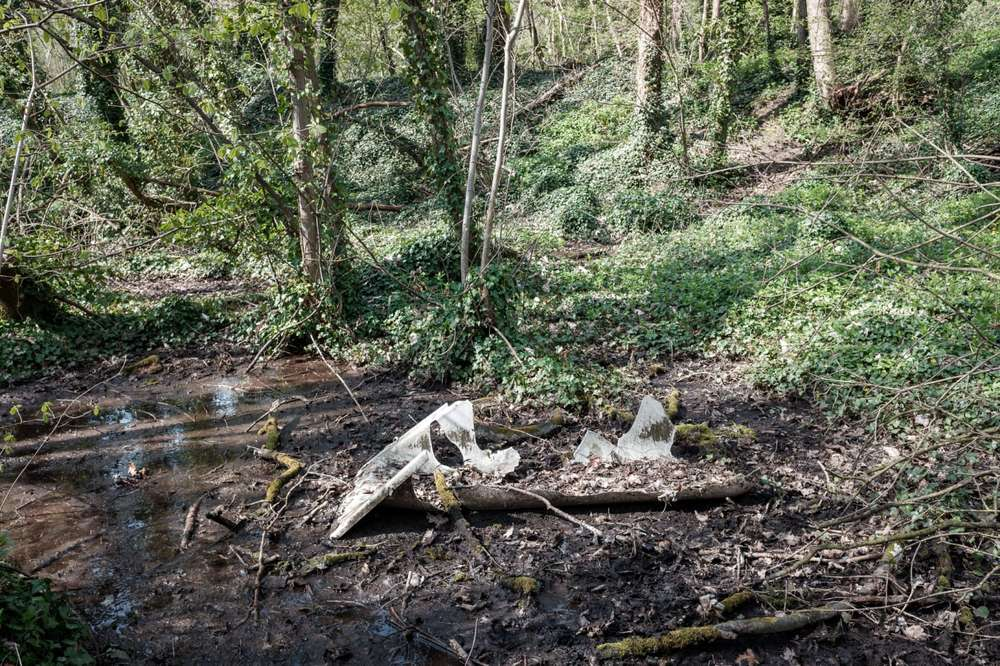The brittle remains of a bathtub wallow in a shallow bog. The shards of plastic, beaten and broken, are painted with earth and moss. The surrounding ivy-covered woodland abstains from an acknowledgement of plastic or chemical pollution leaching into the soil. Instead, it is dismissive of the degrading artefact, continuing its biological agency. For nature and the site, the remains are a trivial cultural influence.
{kind=link}
Langold country park began life as an intended 18th-century country house and park. Aside from the lake, the house never began construction. In the 20th century, the site's agency shifted from country park folly to industry. Firbeck colliery, constructed to the east of the lake, transformed the south lawns into the colliery spoil heap -an artificial hill, 80 metres high above sea level, that I see daily from my patch of edgelands. The lake, unscathed in the transition, became the employee leisure facility, which has carried on following the colliery closure under council management through fishing, play areas, basic amenities, and pathways.
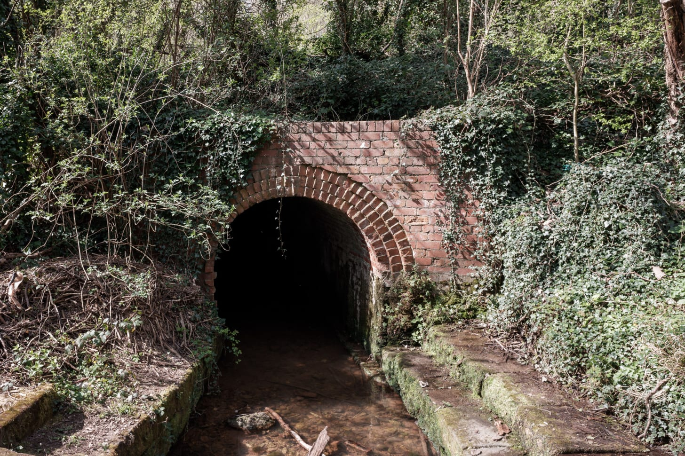A red brick tunnel serves as a watercourse under the original colliery branch rail line. Ivy does its best to camouflage the architecture with a single vine suspended over the archway. Inside, moss clings to the brickwork at the entrance, transitioning to white salts through efflorescence covering the walls throughout. Peering into the tunnel, there is an observable bend and daylight at the other side. I want to walk through but think against it.
{kind=link}
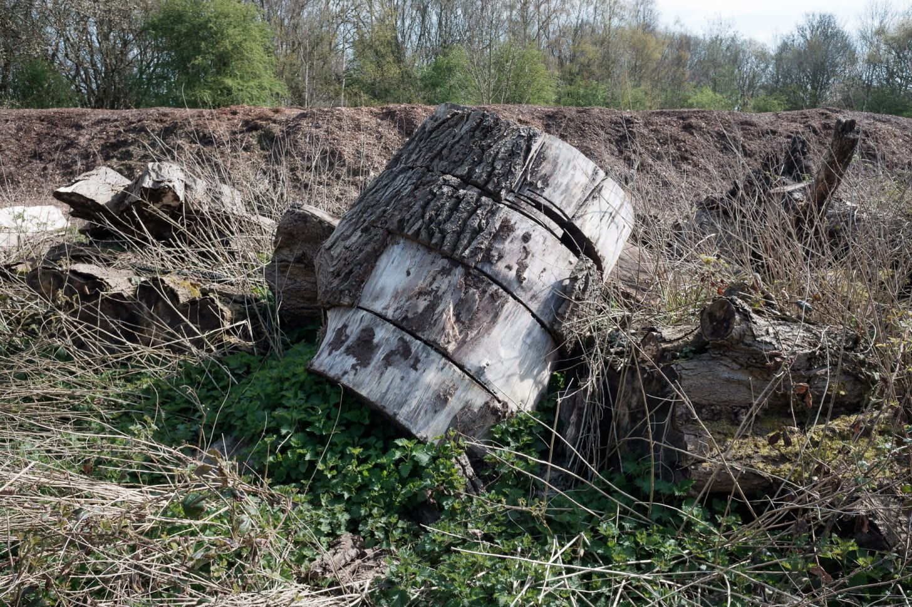Following the original path of the railway, the woodland clears into an open space. Away from the lake and its visitors, the space is utilized for park maintenance. Piles of large logs butchered by someone chainsaw happy lay alongside a line of woodchip piled high. Pockets of grey concrete are visible between the moss and grass as clues to the sites industrial past.
{kind=link}
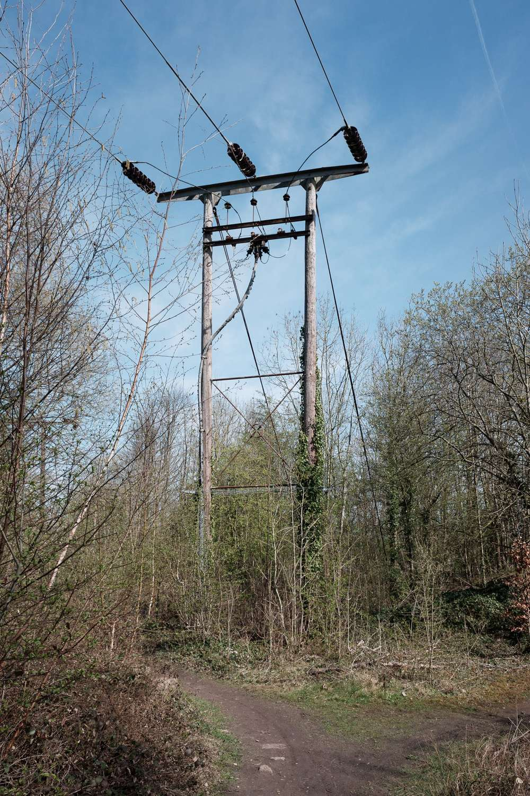The buzz of a nearby substation is muffled by a brash dirt bike careering around the open space. A bunch of young people look on. The dog is scared. We move on through temporary fencing to the site of the colliery.
{kind=link}
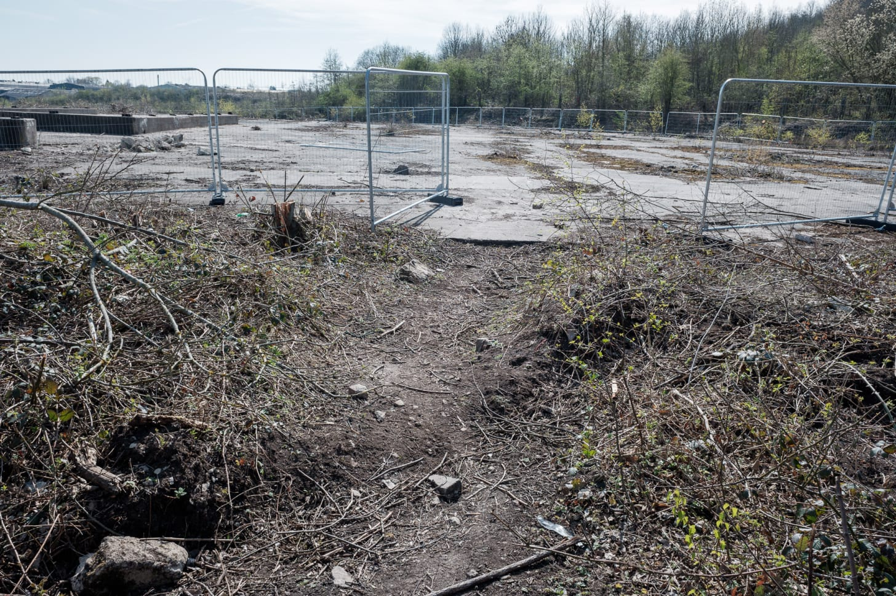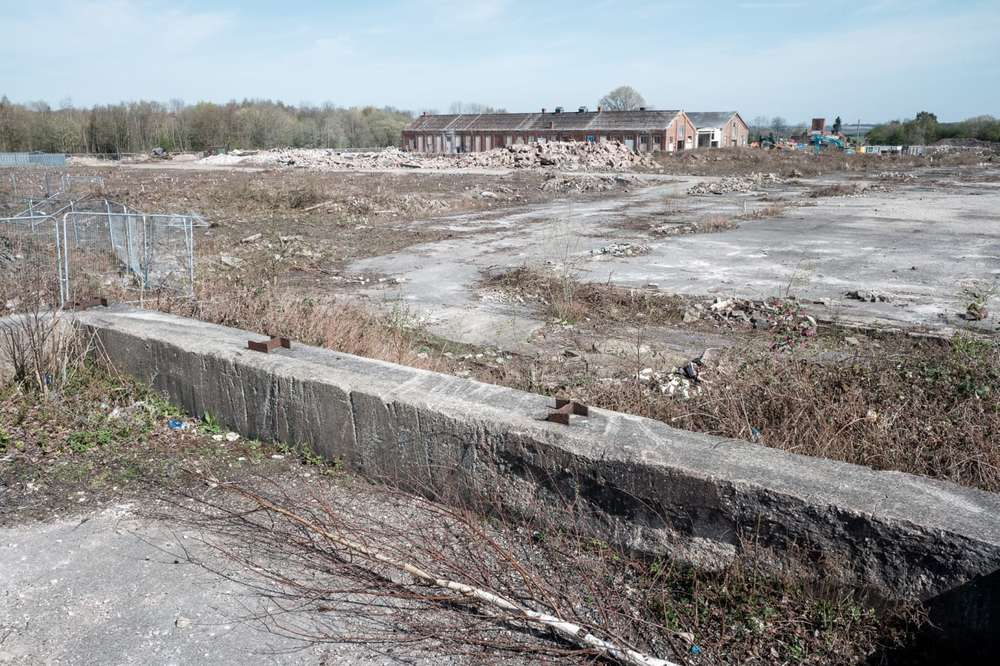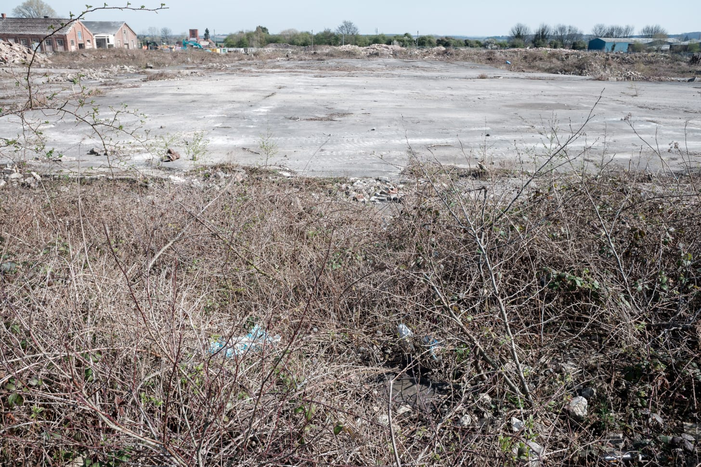There is little that remains of its former past. Presently it's an observable foam of rubble on a grey sea of concrete. I find established birch trees, flowering currents and brambles. They grow where they can, successionally. Gilles Clément calls this the third landscape or le Tiers paysage.I am too late though, they are being removed. The entire site is being cleared for housing on the perpetual cycle of edgeland development.
{kind=link}
{kind=link}
{kind=link}
 Leaving the construction site we head to the spoil heap. It is a short walk of moderate elevation through a thick plantation of saplings consisting of Hawthorn and Beech with the occasional flowering Cherry burnishing the scant thicket with colour. Intermittent desire paths with unknown designations run between the saplings, but we keep to the trail and head upwards.
Leaving the construction site we head to the spoil heap. It is a short walk of moderate elevation through a thick plantation of saplings consisting of Hawthorn and Beech with the occasional flowering Cherry burnishing the scant thicket with colour. Intermittent desire paths with unknown designations run between the saplings, but we keep to the trail and head upwards.
Halfway up, I see the lake above the plantation tree line. A colourless pool populated by ant-sized people. The lake is busy with bank holiday visitors, but up here there is no one.
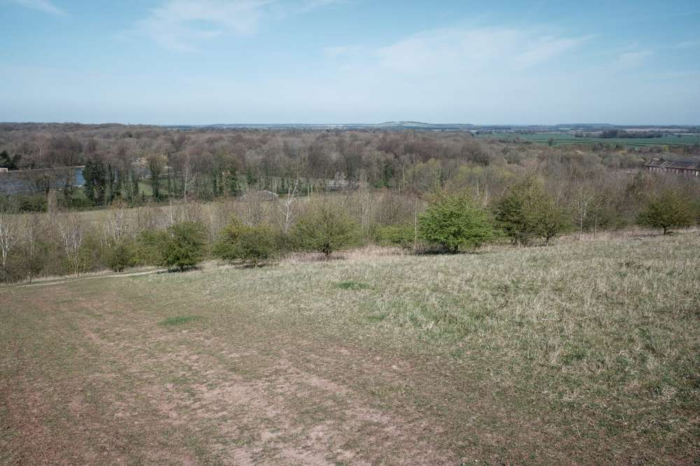Left, the lake. Top right, Harwoth colliery soil heap and far right Firbeck colliery
{kind=link}
As expected, the top is windy and exposed. With the lack of obstruction, I can see the neighbouring counties, Yorkshire, Derbyshire, and on the other side Lincolnshire. I also see home, the distant condensed blur of my regular edgelands; The places I trace daily. The hilltop itself is bare, a monoculture of grass surrounded by hillside plantations except for the open southside. An upturned bread tray inundated with empty beer bottles confirms users come here for the view.
To the northeast is another artificial hill. The spoil heap of Harworth Colliery. Closed in 2006, I am unsure if it is open to the public. A deep dive on duckduckgo suggests a public consultation was held in 2018 for restoration to a spoil tip while a housing development is planned for the former colliery site. Mirroring developments here.
When the housing developments complete their transformation of the former colliery sites, eradicating their industrial history and substituting it with conventional banal suburbia, these heaps of earth hauled out of the ground will be the only significant post-industrial topography. Will they be remembered as remnants of industry or dismissed as nothing more than hills?
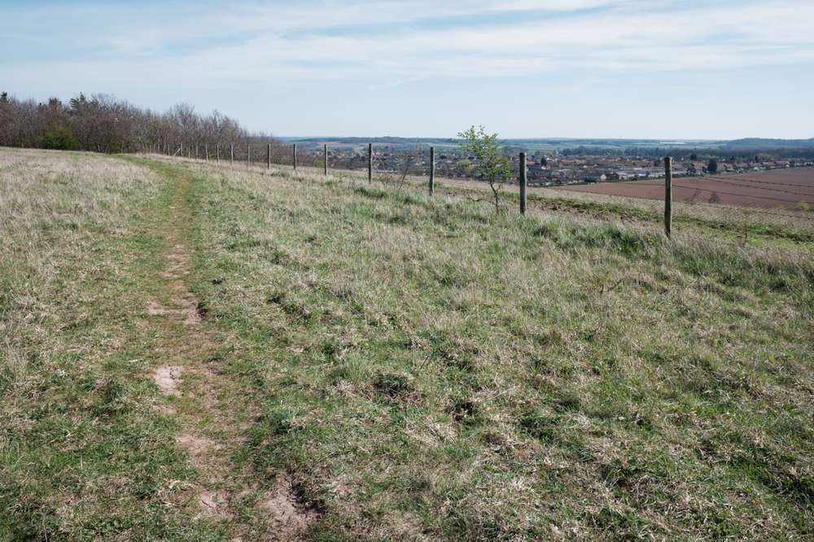Walking these giant mounds of earth, byproducts of lost industry, with their constructed hilltop views is an Anthropocene experience of contradictions through layers of social history (anthropologists call this Anthropogeomorphology). Without the required cultural memory of industrial agency furthered by the sites lack of acknowledgement of the past replaced with saplings and grass, this mound is interpreted as a commonplace natural hill -an area of land that is higher than the surrounding land.By physical specification, it is a hill. However, excavate the shallow topsoil, there is a slate coloured material of rock, a physical layer of history and a monument to fossil fuels.
{kind=link}
Just a few more notes on mining.
Mining is a traditional industry in the area. It shaped the physical and socio-economic landscape of 20th century North Nottinghamshire. While seismically recorded, its physical traces are found throughout edgeland sites, but they are diminishing exponentially with redevelopment.
The last colliery in the area closed in 2015. Chris Upton's Thoresby colliery project demonstrates the nostalgia and tradition of the diminished industrial operation with a modernist gaze for relics and brutal architecture. My interest is in the post -the "what happens next?". I doubt this will be the last visit to a former colliery or constructed hill for the newsletter.
Listen: BBC’s the Compass has a three-part series on forests. This episode discusses meaning and narrative. Max Porter's comments on land politics and how astounding trees are always on private land I found relatable. Towards the end, the idea of woodland as a refuge and site of subversive activity, traits comparable to edgeland sites, is also discussed.
Thanks for reading, see you next week.
This article is from my newsletter. Consider subscribing, it's free and weekly.
Created
11/04/2021
Topics
Roadside Picnic
Psychogeography
Post Industry
Landscape
Walking